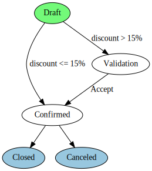
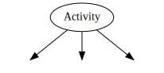
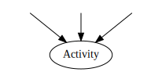

В Odoo бизнес-процесс является техническим объектом для управления набором «вещей, которые нужно сделать», связанного с записями модели данных. Бизнес-процесс обеспечивает более высокий уровень организации задач, выполняемых с или над записью.
В частности, бизнес-процесс представляет собой ориентированный граф, где узлы называются «действиями», а дуги называются «транзакциями».
Действия определяют задачи, которые должна выполняться на сервере Odoo, например, изменение состояния некоторых записей или отправка сообщений электронной почты.
Транзакции управляют тем, как бизнес-процесс переходит от одного действия к другому.
В определении бизнес-процесса можно включить условия, сигналы и триггеры к транзакциям, чтобы поведение бизнес-процесса зависело от действий пользователя (таких, как нажатие кнопки), изменений в записях или выполнения произвольного кода Python.
В целом, система бизнес-процессов Odoo обеспечивает:
Описание эволюции записи (документа) с течением времени
Автоматические действия, основанные на различных и гибких условиях
Управление ролями компании и этапы проверки
Управление взаимодействиями между объектами
Визуальное представление состояния документов в течение их жизненного цикла
Например, базовый порядок состояний может складываться в следующий процесс:

Заказы начинаются с состояния Черновик, и могут быть Подтверждены пользователем, а затем либо отправлены клиенту (переход в состояние Закрыто), либо перейти в состояние Отменено, если клиент отменил заказ.
Компания, использующая Odoo, может захотеть добавить поддержку системы скидок к заказам, где у торгового персонала есть ограниченные полномочия по формированию скидок до 15%, но для предоставления скидок превышающих 15%, требуется подтверждение менеджера. Бизнес-процесс можно изменить онлайн самостоятельно через графический интерфейс, вместо того, чтобы добавить соответствующие шаги путем редактирования файлов Python или XML:
Поскольку действия могут выполнять произвольные операции, Проверка может автоматически отправлять запрос на проверку соответствующему сотруднику.
Примечание
Необходимо изменить представление заказа, таким образом чтобы добавить кнопку Принять скидку для менеджеров
Основы
Определение бизнес-процесса с помощью файлов данных является достаточно простым делом: запись "workflow" предоставляется вместе с записями для описания операций и транзакций. Например, ниже приведена простая последовательность из двух действий, определенных в XML файле.
<record id="test_workflow" model="workflow">
<field name="name">test.workflow</field>
<field name="osv">test.workflow.model</field>
<field name="on_create">True</field>
</record>
<record id="activity_a" model="workflow.activity">
<field name="wkf_id" ref="test_workflow"/>
<field name="flow_start">True</field>
<field name="name">a</field>
<field name="kind">function</field>
<field name="action">print_a()</field>
</record>
<record id="activity_b" model="workflow.activity">
<field name="wkf_id" ref="test_workflow"/>
<field name="flow_stop">True</field>
<field name="name">b</field>
<field name="kind">function</field>
<field name="action">print_b()</field>
</record>
<record id="trans_a_b" model="workflow.transition">
<field name="act_from" ref="activity_a"/>
<field name="act_to" ref="activity_b"/>
<field name="signal">signal_goto_b</signal>
</record>
Бизнес-процесс всегда определяется для конкретной модели данных (модель данных задается атрибутом osv на модели данных workflow). Для этой модели данных будут вызываться методы, определенные в действиях или транзакциях.
В приведенном выше примере кода создается бизнес-процесс, называемый "test_workflow". Он состоит из двух действий, названных «a» и «b», и одной транзакции, изменяющей состояние от «a» к «b».
Первое действие имеет свой атрибут flow_start, установленный в True, поэтому Odoo знает, с чего начать бизнес-процесс после его инициации. Поскольку on_create имеет значение True в записи бизнес-процесса, для каждой вновь созданной записи создается бизнес-процесс. (В противном случае бизнес-процесс должен быть инициализирован другими способами, например, с помощью кода на Python.)
Когда бизнес-процесс инициализируется, он начинается с действия "a". Это действие в данном случае имеет вид функции, что означает, что действие print_a () `` является вызовом метода для модели данных ``test.workflow (как правило cr, uid, ids, context аргументы уже вам переданы).
Переход между «a» и «b» указывает сигнал, но не любое условие. Это означает, что экземпляр рабочего процесса немедленно перейдет от "a" к "b", когда будет получен сигнал signal_goto_b, и, следовательно, обработает действие "b"'s действие` [UNKNOWN NODE title_reference] [UNKNOWN NODE problematic].
Действия
В то время как транзакции можно рассматривать как управляющие структуры бизнес-процессов, действия это то, где происходит все самое интересное и нужное, от изменения состояний записи до отправки электронной почты.
Существуют различные виды действий: Dummy, Function, Subflow, и Stop all, каждое из которых выполняет различные операции в момент своего выполнения. В дополнение к их параметру kind, действия имеют другие свойства, подробно описанные в следующих разделах..
Запуск и остановка бизнес-процесса
Атрибут flow_start имеет булево значение, определяющее, обрабатывается ли действие при инициализации бизнес-процесса. Несколько действий могут иметь свой атрибут flow_start, установленный в True. Когда происходит инициализация бизнес-процесса для записи, Odoo просто обрабатывает их все и затем назначает вес всем своим исходящими транзакциям.
Атрибут flow_stop имеет булево значение, определяющее, останавливает ли объект экземпляр бизнес-процесса. Экземпляр бизнес-процесса считается завершенным, когда все его действия с атрибутом flow_stop, установленным в True, завершены.
Для Odoo важно знать, когда экземпляр бизнес-процесса завершен. Бизнес-процесс может иметь действие, которое фактически является другим бизнес-процессом (называемым подпроцессом); Это действие завершается, только тогда, когда подпроцесс завершен.
Подпроцесс
Действие может внедрить полноценный бизнес-процесс, называемый подпроцессом (бизнес-процесс в который внедряется подпроцесс называется родительским). Бизнес-процесс для инициации определяется атрибутом subflow_id.
Примечание
В графическом интерфейсе этот атрибут нельзя установить, если только атрибут действия kind не является subflow.
Действие считается завершенным (и его исходящие транзакции готовы к распределению весов), тогда когда подпроцесс завершен (см. выше атрибут flow_stop ).
Отправка сигнала из подпроцесса
Когда рабочий поток внедрен в операцию (как подпоток) рабочего процесса, подпоток может отправить сигнал из своих собственных действий в родительский рабочий процесс, указав имя сигнала в атрибуте `` signal_send``. Odoo обрабатывает эти действия, отправляя значение `` signal_send`` с префиксом «subflow.» В экземпляр родительского рабочего процесса.
Другими словами, можно реагировать и получать переходы в родительском рабочем процессе, когда действия выполняются в подпотоке.
Действия сервера
Действие может запускать "Server Action" , указав его идентификатор в атрибуте action_id.
Действие с помощью Python
Действие может выполнять код Python, заданный атрибутом action. Среда для распределения весов такая же, как и в разделе Conditions.
Режим разделения
После того, как действие обработано, Odoo определяет вес транзакции, чтобы достичь следующего действия в бизнес-процессе.
Однако, если у действия есть более одной транзакции, Odoo должна решить, какое действие или действия следует выполнять.
Этот выбор контролируется атрибутом split_mode:
XOR(по умолчанию)По умолчанию, Odoo будет использовать первую транзакцию (в порядке определенном в
sequence), условие которй выполняется. Все остальные транзакции игнорируются.ORВ режиме
ORвсе транзакции с удовлетворенным состоянием выполняются синхронно. Транзакции, которые еще не действительны, будут игнорироваться, даже если они станут действительными позже.ANDВ режиме `` AND `` Odoo будет ждать, пока не будут действительны все транзакции, а затем выполнит их все синхронно (как в режиме
ИЛИ).
Оба режима OR и AND приведут к действиям в активном состоянии в одном и том же рабочем процессе.
Режим объединения
Точно так же, как состояния исходящих транзакций могут быть объединены, для того чтобы решить, можно ли их запускать или нет, входящие транзакции могут быть объединены, чтобы решить, можно ли вообще и когда будет можно обрабатывать действие.
Атрибут join_mode контролирует это поведение:
XOR(по умолчанию)Любая входящая транзакция активирует действие и запускает его.
ANDДействие запускается и обрабатывается только один раз когда все входящие транзакции были приняты.
Виды действий
Вид действий определяет тип работы, которую может выполнять действие.
- Болванка (
dummy, по умолчанию) Ничего не делает, или вызываеь действие сервера. Часто используется в качестве диспетчера или сборного пункта для транзакций.
- Функция (
function) Запускает код python, выполняет действие сервера.
- Остановить все (
stopall) Полностью останавливает экземпляр бизнес-процесса и помечает его как завершенный.
- Подпроцесс (
subflow) Запускает выполнение другого бизнес-процесса, как только этот бизнес-процесс завершен, действие будет считаться выполненным.
По умолчанию подпроцесс инициируется для той же записи, что и родительский бизнес-процесс. Это поведение можно изменить, предоставив код Python, который возвращает идентификатор записи (той же модели данных, которой принадлежит подпроцесс). В этом случае внедренный экземпляр подпроцесса будет выполнять действие над этой записью.
Транзакции
Транзакции обеспечивают управляющие структуры для организации бизнес-процесса. Когда действие завершено, движок бизнес-процессов пытается получить транзакции, исходящие от завершенного действия, к следующим. В своей простейшей форме (как в примере выше), они связывают действия последовательно: действия обрабатываются, как только предшествующие им действия завершаются.
Вместо того чтобы запускать все действия одним махом, можно ожидать выполнения транзакций, выполняя их только при соблюдении некоторых критериев. Критерии - это условния, сигналы и триггеры. Они подробно описаны в следующих разделах.
Условия
Когда дейтсвие завершено, его исходящие транзакции проверяются, чтобы определить, можно ли экземпляру бизнес-процесса выполнить их и перейти к следующим действиям. Когда определяется только условие (т.е. не задан ни сигнал, ни триггер), условие оценивается Odoo, и если оно оценивается как True, экземпляр бизнес-процесса выполняет данную транзакцию. Если условие не выполняется,то оно будет переоцениваться каждый раз при изменении связанной записи или явным вызовом соответствующего метода.
По умолчанию атрибут condition (то есть, выражение, подлежащее вычислению) - это просто «True», который тривиально вычисляет «True». Обратите внимание, что условие может состоять из нескольких строк; В этом случае значение последней определяет, возможна ли транзакция.
В среде оценки условий удобно определить несколько символов (в дополнение к тем, что уже есть среде Odoo safe_eval):
все имена столбцов модели данных и
все атрибуты просматриваемой записи.
Сигналы
Помимо условия, транзакция может указывать имя сигнала. Когда присутствует такое имя сигнала, транзакция не выполняется напрямую, даже если условие оценивается как True. Вместо этого транзакции собираются в блоки, ожидающие пробуждения.
Чтобы пробудить транзакцию с определенным именем сигнала, сигнал должен быть отправлен в экземпляр бизнес-процесса. Обычный способ отправки сигнала это - кнопка в пользовательском интерфейсе, используя элемент <button /> с именем сигнала в качестве атрибута name для этой кнопки. Как только кнопка нажата, сигнал отправляется в экземпляр бизнес-процесса текущей записи.
Примечание
Условие по-прежнему проходит оценку, когда сигнал отправляется в экземпляр бизнес-процесса.
Триггеры
При условиях, которые оцениваются как False, транзакции не принимаются (и, следовательно, действие, к которой она ведет, не обрабатывается немедленно). Тем не менее, экземпляр бизнес-процесса может получить новые шансы на прогресс с этой транзакцией путем предоставления так называемых триггеров. Идея состоит в том, что когда условие не выполняется, триггеры записываются в базу данных. Позже можно специально пробудить экземпляры бизнес-процессов, которые устанавливают эти триггеры, предлагая им пересмотреть свои условия выполнения транзакций. Этот механизм позволяет с меньшими затратами пробуждать экземпляры бизнес-процессов, перенаправляя только некоторые из них (тех, которые установили триггеры) вместо их всех.
Триггеры записываются в базу данных как идентификаторы записей (вместе с именем модели данных) и ссылаются на экземпляр бизнес-процесса, ожидающий эти записи. Определение транзакции предоставляет имя модели данных (атрибут trigger_model) и выражение Python (атрибут trigger_expression), которое оценивает список идентификаторов записей в данной модели данных. Любая из этих записей может пробудить экземпляр бизнес-процесса, с которым она связаны.
Примечание
Триггеры не переустанавливаются при каждой повторной попытке выполнить транзакцию.